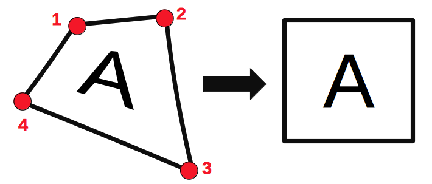
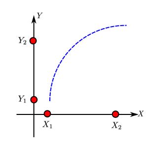
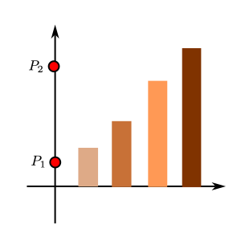
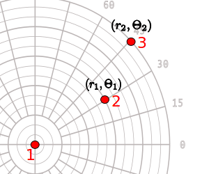
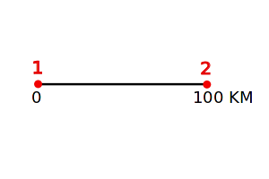
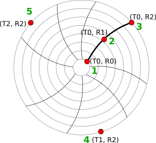

Drag and drop or paste an image anywhere on this page
Select image files or PDF documents
Already digitized a chart before? Resume a previously saved project (.json or .tar).
Don't have a chart handy? Try a sample jet fuel distillation curve.
Image: Page:
Waiting for image…
[xx, xx]
Axes Calibration
Click points to select and use cursor keys to adjust positions. Use Shift+Arrow for faster movement. Click complete when finished.
Manual Extraction
Adds a data point at (0, 0) - the intersection of the X and Y axis calibration lines - using the current dataset’s axes. Does nothing if a point is already there.
iWhen placing a point with Add Point, nudges it (up to a few pixels) toward the nearest spot that best matches the curve's ink. No color needs to be picked ahead of time - it learns the ink color automatically from a running average of the actual pixel colors at the last few points you've placed in this dataset (the very first point bootstraps from the color right at your click), and only acts when that color is clearly different from the Background color (Automatic Extraction below). It never moves the point unless it finds a clearly better, unambiguously ink-like match within that small radius - if nothing nearby is confident, the point stays exactly where you clicked. Hold Shift while clicking to place a point exactly where you click, bypassing the nudge for that one point - useful in tricky, cluttered parts of a chart.
Automatic Extraction
Mask
Width
Width
Color
Distance
iHow far a pixel's color can be from the picked Foreground/Background color (above) and still count as a match, on a 0–441 scale. Lower = stricter, only near-exact matches; higher = looser, catches more shades and anti-aliasing but also risks pulling in other same-colored ink like grid lines, text, or shading. "Filter Colors" highlights every pixel that currently matches so you can preview and tune this before running the algorithm below.
Algorithm
Template
iAfter Run, fits a smooth trend curve to the extracted points, repeatedly drops points that don’t match it (e.g. grid lines or shading picked up by Distance above), and refits until the curve matches the remaining data well. Then resamples clean points along that curve at this algorithm’s X step. Only applies to Averaging Window and the two X Step algorithms. Uncheck to keep the raw extraction untouched.
iAfter Run, checks the image around each extracted point and ranks it by how much of that neighborhood is ink color vs. background. A thick curve stroke fills its surroundings with ink, so real curve points rank high; a thin grid line only clips through a sliver of the neighborhood, so grid hits rank low and get dropped. Only applies to Averaging Window and the two X Step algorithms. If Curve Fit Outlier Removal (above) is also checked, a point must pass both checks - fitting the trend curve AND being on thick ink - to survive. Uncheck to skip this check.
Point Groups
Current Tuple:
Current Group:
Overrides
⇪
RGB:
,
,
Dominant Colors:
Edit Image
Measure Distances
Measure Angles
Measure Area/Perimeter
Press Enter or Esc key to complete the polygon
Measure Path
Measure Closed Path
Detect Grid
Mask
Color
Background Mode
Horizontal
X%
Vertical
Y%
Image Editing
Click and drag to mark the crop region. Press Enter to complete cropping, Esc to cancel
XY Axes Calibration
Specify four points: X1, X2 on X-axis and Y1, Y2 on Y-axis
Export a JSON file containing the axes calibrations, digitized data and measurements. This JSON file can be loaded to resume work at a later time. You can also download a combined 'project file' which includes this JSON and also the image in a single TAR file.
Project name: .json/.tar
Import JSON/Project
Load a previously exported JSON or project file (.tar)
(Note: This will clear any unsaved data in the current plot.)
JSON/Project File:
Keyboard Shortcuts
Click to select a data point. The following keys can then be used to adjust the position:
Cursor (Arrows) -
Move up/down/right/left
Shift + Cursor -
Faster rate of movement
Q -
Select next point
W -
Select previous point
Del/Backspace -
Delete point
E -
Edit label (Bar Chart)
R -
Override value (When adjusting
non-Bar Chart points
Edit Label
Label:
Override Point Values
Perspective Transformation

Click on four corners of the region to be transformed as shown.
Edit Existing Calibration?
Do you wish to tweak existing axes calibration or select a new axes type?
Export All Datasets
Export data from all datasets. Pick a format and how the datasets should be arranged.
Side-by-Side
Stacked
Multiple Sheets
Clipboard
n/a
CSV
n/a
Excel
Curve Fit
Dataset:
Fit type:
Degree:
Control points:
Spline order:
InterpolateiLive interpolation using the fit above - type an X value to see the corresponding Y evaluated from the current fit, plotted as a green marker on the chart above.
X =
Y = -
Coefficients
iCopies the fit's formula string (e.g. y = 1.5 + 2.3·x) to your clipboard.iDownloads the fit's coefficients, formula, and R²/RMSE/SSE stats as a .csv file.iDownloads 100 evenly-spaced X,Y points sampled along the fit curve as a .csv file - handy for pasting into Excel.iOpens a self-contained HTML page with an X input and live Y output for this fit - works fully offline, no internet needed.
Add Dataset
Name:
Count:
Rename Dataset
Name:
Rename Axes
Name:
Image Info
Dimensions: pixels
Pages: pages
Page Labels
Relabel the current page number with an alphanumeric string. Optionally, relabel all page numbers in the image based on the current page (only supports integer values).
New page label:
Point Groups
Point groups are groups of related data points such as standard error or confidence intervals.
To define a point group, enter a name in the text input below. Create additional point groups as necessary.
E.g. Assume we have 3 point groups defined: Median, Standard error +1, and Standard error -1. Points would be entered in the order shown in the image to the right. For each set of points, the median value would first be recorded, then the standard error +1, and finally the standard error -1. The process would repeat for the next set of points.
Group 0:
Select Axes Type
2D XY Axes
Bar Chart
Polar Diagram
Ternary Diagram
Map (Scale Bar)
Image
Circular Chart Recorder

Click four known points on the axes in the order shown in red. Two on the X axis (X1, X2) and two on the Y axis (Y1, Y2).

Click on two known points (P1, P2) on the continuous axes along the bars

Click on the center, followed by two known points.

Click on the two ends of the scale bar on the map.
Click on the three corners in the order shown above.
Click 'Calibrate' to set up a 1:1 mapping from image pixels to data

Click on five points on the chart axes as shown:
First three points at different radial positions but the same known time (T0).
Next two points on any times (T1, T2) but at the same radial position as R2.
AI Assist (Experimental)
AI assist is an experimental feature that uses state-of-the-art multimodal AI models on your image to auto detect axes information and datasets. This feature is under active development and more capabilities will be added soon.
Click run to attempt auto-generating Axes and Datasets for your image.
Quota used:
Custom X Values
Specify X values for data extraction, for example
[1, 2, 3]
Preferences
Language:
Note: You may need to hard-reload this page after saving changes (see how).
WebPlotDigitizer
Unstable version warning!
You are using a beta version of WebPlotDigitizer. There may be some issues with the software that are expected.
Import JSON/Project
JSON/Project data has been loaded!
Invalid Inputs
Please enter valid values for calibration.
Invalid Log Scale Value
Values on a log scale axis can not be zero as log(0) is undefined. Please enter a non-zero value.
Acquire Data
Please calibrate the axes before acquiring data.
Clear data points?
This will delete all data points and point group definitions from this dataset
Webcam Capture
Your browser does not support webcam capture using HTML5 APIs. A recent version of Google Chrome is recommended.
Transformation Equations
Transformation equations are available only after axes have been calibrated.
Unsupported Feature!
This feature has not been implemented in the current version. This may be available in a future release.
Processing
ERROR: Invalid File!
Please load a valid image file. Common image formats such as JPG, PNG, BMP, GIF etc. should work. Word documents are not accepted.
Raw
Nearest Neighbor
Manage Datasets
Please calibrate the axes before managing datasets.
Delete Dataset
Are you sure you want to delete this dataset?
Delete Associated Datasets
Delete all datasets associated with this axes?
Delete Axes
Are you sure you want to delete this axes?
Averaging Window
X Step w/ Interpolation
Custom Independents
X Step
Blob Detector
Bar Extraction
Histogram
Specify Plot (Foreground) Color
Specify Background Color
Please add some data before exporting.
Error: No datasets to export!
Add Dataset Error!
Rename Dataset Error!
Dataset with this name already exists. Please pick a different name.
Rename Axes Error!
Axes with this name already exists. Please pick a different name.